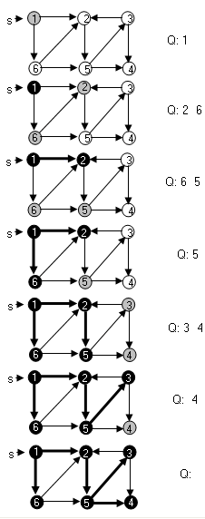
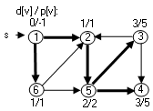
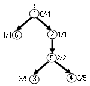
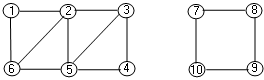
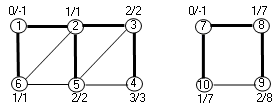
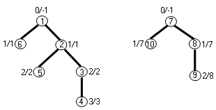

|
|
|
|
|
Алгоритм построения пути между вершинами
Поиск в ширину (breadth - first search) - один из базовых алгоритмов , лежащий в основе многих других алгоритмов для графов. Например, алгоритм Дейкстры для поиска кратчайших путей для заданной вершины или алгоритм Прима поиска минимального покрывающего дерева являются обобщениями поиска в ширину. Пусть задан граф G=(V, E) и начальная вершина s. Алгоритм поиска в ширину перечисляет все допустимые из s вершины в порядке возрастания расстояния от s. Расстоянием считается длина (число ребер) кратчайшего пути. В результате из графа выделяется часть, называемая "деревом поиска в ширину" с корнем s. В этом дереве путь из корня s в любую вершину будет одним из кратчайших путей из s в графе. Алгоритм применим к орграфам и неориентированным графам. Алгоритм называется поиском в ширину, так как поиск идет вширь: сначала выбираются все соседние для заданной вершины s, затем соседи соседей и так далее. Для наглядности будем использовать раскраску вершин[3]. Будем различать белые, серые и черные вершины. Белая вершина - вершина, которая еще не обнаружена при поиске в вершину. Изначально все вершины графа белые. Серая - это вершина, уже обнаруженная при поиске в качестве соседней, но у которой не просмотрены ее соседи. Черная - вершина, обнаруженная при поиске и у нее просмотрены все ее соседи. В ходе поиска обнаруженные вершины поочередно становятся серыми и в дальнейшем, - черными, когда будут просмотрены их соседи. Различие между серыми и черными вершинами используется для управления порядком обхода. Вначале дерево поиска состоит только из корня вершины u = s. Вершина s сразу окрашивается в серый цвет. Как только алгоритм поиска обнаруживает новую смежную для u вершину - v, которая имеет белую окраску, вершина v вместе с соответствующим ребром (u, v) добавляется к дереву поиска. Вершина v окрашивается в серый цвет. Далее для вершины u просматриваются и обнаруживаются следующие смежные белые вершины . Все обнаруженные и перекрашенные в серый цвет смежные вершины помещаются в очередь для дальнейшего просмотра, а вершина u после этого перекрашивается в черный цвет. Далее из очереди извлекается первая серая вершина и для нее выполняется аналогичный просмотр смежных белых вершин. Алгоритм поиска в ширину BFS(G, s) имеет входные данные - структуру графа G и выделенную вершину s. Для фиксации дерева введем в структуру вершин графа поле - p[u] - указатель на родителя вершины в дереве и поле d[u] - расстояние от s до u. Для управления обходом также введем поле цвета вершины - color[u]. BFS (G, s)
1.
for
для каждой вершины
u 2. do color [u] ← БЕЛЫЙ
3.
d[u]
← 4. p[u] ← nil 5. color [s] ← СЕРЫЙ 6. d[s] ← 0
7.
Enqueue(Q,
s)
8. while Q не пуста 9. do u ← Dequeue(Q)
10.
for
для каждой вершины v
11. do if color [v] = БЕЛЫЙ 12. then color [v] ← СЕРЫЙ 13. d[v] ← d[u]+1 14. p[v]←u 15. Enqueue (Q, v) 16. color [u] ← ЧЕРНЫЙ
Иллюстрация обхода в ширину:
 Дерево обхода в ширинуВ ходе работы алгоритма в вершинах фиксируются параметры d[v] - расстояние от исходной вершины s до вершины v, p[v] - вершина - предшественник, через которую была обнаружена вершина v при обходе.  То есть в графе выделяется некоторый подграф - дерево поиска, задаваемое полями p[v]. В частности для рассматриваемого примера получилось дерево:  Это дерево называется подграфом предшествования или деревом поиска в ширину для заданного графа G=(V, E) и заданной начальной вершины s.
Алгоритм построения пути между вершинамиЕсли алгоритм BFS вычисляет для каждой вершины родителя в дереве - p[v], то можно построить любой кратчайший путь между вершиной s и вершиной v дерево, пользуясь построенным деревом обхода в ширину. Path (G, s, v)1. if v = s
2.
then Enqueue(Q,
v)
3.
else if p[v] = nil
4. then error "пути из s в v нет" 5. else Path (G, s, p[v]) 6. Enqueue(Q, v)
После работы рекурсивного алгоритма BFS_Path, путь зафиксирован в очереди Q в виде последовательности вершин от s до v. Например, путь от вершины 1 до вершины 3 будет храниться в очереди Q: 1, 2, 5, 3.
Алгоритм полного обхода в ширинуЕсли граф не звязный, то есть состоит из отдельных связных компонент, то вместо дерева обхода необходимо строить лес обхода в ширину. Для этого необходимо выполнить полный обход в ширину с помощью дополнительной функции BFS_Full(G). BFS_Full(G)
1.
for каждой вершины s 2. do
3
d[s] ← 4. p[s] ← nil 5. color [s] ← БЕЛЫЙ 6. for s ← 1 to |V[G]| 7. do if color [s] = БЕЛЫЙ 8. then BFS_Visit (s) BFS_Visit (G, s)
1.
Clear(Q)
2. color [s] ← СЕРЫЙ 3. d[s] ← 0 4. Enqueue(Q, s) 5. while Q не пуста 6. do u ← Dequeue(Q)
7.
for для
каждой вершины v
8. do if color [v] = БЕЛЫЙ 9. then color [v] ← СЕРЫЙ 10. d[v] ← d[u]+1 11. p[v]←u 12. Enqueue (Q, v) 13. color [u] ← ЧЕРНЫЙ
Пусть дан не звязный граф:
 Алгоритм полного обхода в ширину выделит следующий подграф предшествования: 
То есть построены два дерева, образующие лес обхода в ширину:  Анализ времени выполнения алгоритмаКаждая вершина помещается в очередь не более одного раза Операции с очередью Enquene, Dequeue требуют O(1) времени. Таким образом, для операций с очередью требуется O(v) времени. Для каждой вершины полностью просматриваются их списки смежности и сумма длин всех просмотренных списков равна числу ребер |E| и на их обработку требуется O(E) времени. Инициализация алгоритма обхода в ширину требует O(v) шагов. В итоге для выполнения обхода в ширину требуется O(V+E) времени. Алгоритм BFS находит расстояния от начальной вершины s до каждой из достижимых вершин для заданной вершины s. Под расстоянием понимается длина кратчайшего пути - число ребер на пути от вершины s до вершины v. Путей может быть несколько, они определяются порядком выбора вершин из списков смежности.
|
|
|